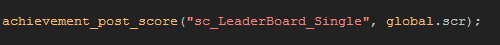

Tutorial
Page 7 of 8
Sending A High Score
As with achievements, GameMaker:Studio makes it incredibly easy to add your players scores to the leaderboard for your game.
You will need to know the name of the leaderboard that you wish to post the score too (this is the Leaderboard ID as mentioned on page 3 of this tutorial) and it is sent along with the
score using the function achievement_post_score. the actual code would look something like this:

Don't forget that you can have various leaderboards for each game, so if your game has three different worlds you can have three single leaderboards (one for each world) and then a compiled
leaderboard of the all three together.
It is also a good idea to keep track of the players high scores on a local level, creating ini files to store them, so that they can track their progress on an individual level as well as on Game Center
against the other people that may have been playing your game too.
Click on the Next button to go to the next page of the tutorial.